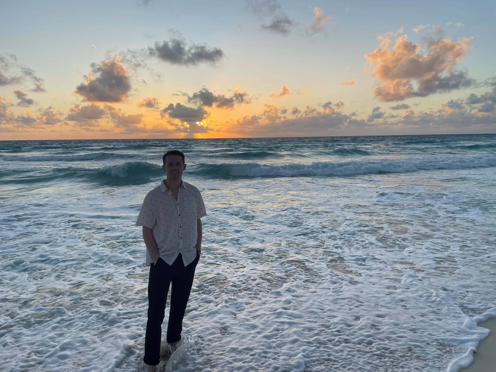

Welcome to my website!
My name is Brady Edwards, born and raised in Edmonds, Washington.
I’m currently in school pursuing the Web Application and Cloud Developer AAS-T degree at Edmonds College.
I grew up in a family of four, my mom and dad, my brother and myself.
I was introduced to sports at a young age, specifically basketball and baseball.
From that point on sports became a part of my identity.
I attended Edmonds Woodway High School from 2012-2016 where I played both basketball and baseball all four years.
Once I graduated I continued on to play baseball at Edmonds Community College.
Eventually I decided to pursue work instead of continuing my education.
For three years I worked with my dad as a general contractor remodeling residential properties.
From there I decided to apply to Boeing, where I was hired as an aircraft mechanic.
This is my current position while I work towards my degree and ultimate goal of a career in technology.
The unprecedented growth in technology, driven by accelerated innovation and advancements has fueled my desire towards achieving this degree.
The rapid evolution has transformed the way we live, work, and communicate, creating a dynamic landscape of constantly evolving devices and systems.
I’m excited for what the future holds and new career opportunities.
At the bottom of this page you’ll notice a comment box, please share your thoughts regarding my website.
I would love to hear your options, what you enjoyed while you were here, and how you think I could improve my site. I look forward to hearing from you, and thank you for taking the time to visit my page!
